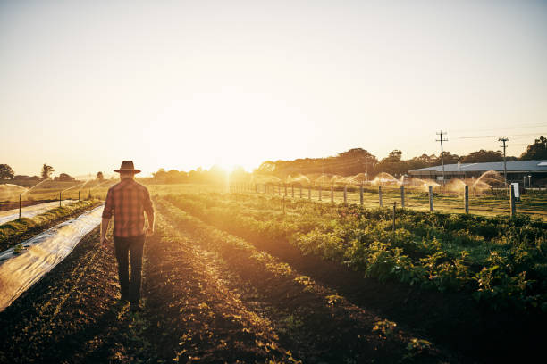
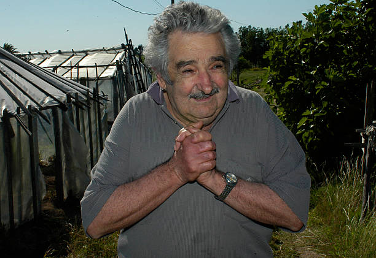

En esta sección podrás conocer las diferentes prácticas sostenibles que se pueden implementar en la agricultura para promover un futuro más estable.
Aqui realizamos la practica 1 cual visualisamos el campo donde vamos a plantar los cultivos

Mujica nos visito
